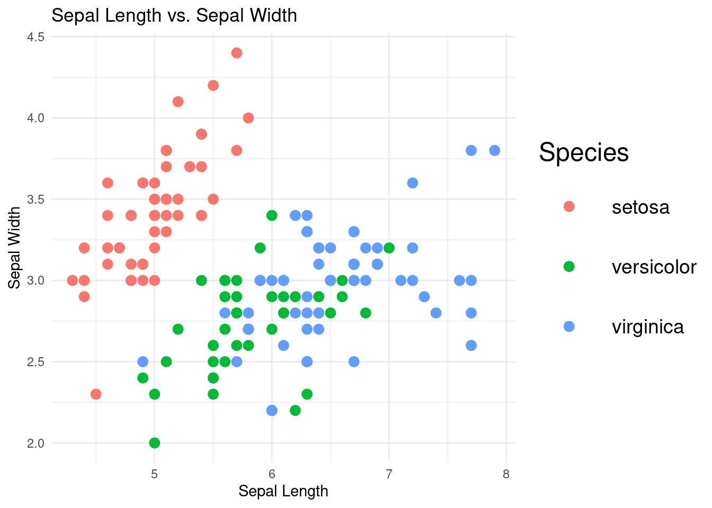

Chapter 7 Graph Sizing in R
This worksheet demonstrates how to adjust the size of various plots in R using ggplot2. We will explore different techniques to control the size of the plots and their elements.
7.0.1 Load the necessary libraries and data
library(ggplot2)
library(dplyr)
# Load the built-in datasets
data("mtcars")
data("diamonds")
data("iris")7.0.2 Adjusting the overall size of the plot
You can control the overall size of the plot using the width and height options within the R Markdown output settings. Another way is to use the ggsave() function when saving the plot as an image file.
scatter_plot <- ggplot(mtcars, aes(x = hp, y = mpg)) +
geom_point() +
labs(title = "Miles per Gallon vs. Horsepower",
x = "Horsepower",
y = "Miles per Gallon") +
theme_minimal()
scatter_plot
7.0.3 Adjusting the size of points, lines, and bars
Use the size parameter within the geom_*() functions to control the size of points, lines, and bars.
scatter_plot_large_points <- scatter_plot +
geom_point(size = 3)
scatter_plot_large_points7.0.4 Adjusting the size of text elements
You can change the size of text elements, such as axis labels and titles, using the theme() function.
scatter_plot_custom_text <- scatter_plot_large_points +
theme(plot.title = element_text(size = 24, face = "bold"),
axis.title.x = element_text(size = 18),
axis.title.y = element_text(size = 18),
axis.text.x = element_text(size = 14),
axis.text.y = element_text(size = 14))
scatter_plot_custom_text
7.0.5 Adjusting the size of legend elements
You can modify the size of the legend elements using the theme() function along with element_text() and element_rect().
iris_scatter_plot <- ggplot(iris, aes(x = Sepal.Length, y = Sepal.Width, color = Species)) +
geom_point(size = 3) +
labs(title = "Sepal Length vs. Sepal Width",
x = "Sepal Length",
y = "Sepal Width",
color = "Species") +
theme_minimal() +
theme(legend.title = element_text(size = 18),
legend.text = element_text(size = 14),
legend.key.size = unit(1.5, "cm"))
iris_scatter_plot
7.0.6 Adjusting the size of facet labels
You can control the size of facet labels using the theme() function along with element_text().
diamonds_facet_plot <- ggplot(data = diamonds %>% filter(carat < 3), aes(x = carat, y = price)) +
geom_point(alpha = 0.5) +
facet_wrap(~cut) +
labs(title = "Price vs. Carat of Diamonds, Faceted by Cut",
x = "Carat",
y = "Price") +
theme_minimal() +
theme(strip.text = element_text(size = 18, face = "bold"))
diamonds_facet_plot
7.0.7 Adjusting the size of axis ticks
You can modify the size of axis ticks using the theme() function along with element_line().
scatter_plot_custom_ticks <- scatter_plot +
theme(axis.ticks = element_line(size = 1.5),
axis.ticks.length = unit(0.3, "cm"))
scatter_plot_custom_ticks
Figure 7.1: Figure 6: Scatterplot of mpg vs. hp with customized axis tick size.